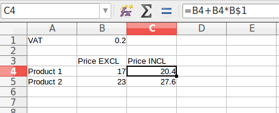
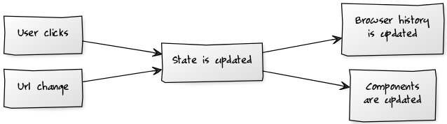

<!-- 00_intro.md--> ## Complexity: Divide and Conquer! React.Amsterdam Conf 2017 Michel Weststrate - Mendix - @mweststrate <br/><br/> <br/> .appear[ <small>(Nr 1. best tech employer in NL according to Glassdoor.com)</small> ] ---  <!-- By <a href="//commons.wikimedia.org/wiki/User:Tataryn77" class="mw-redirect" title="User:Tataryn77">Tataryn77</a> - <span class="int-own-work" lang="en">Own work</span>, Public Domain, <a href="https://commons.wikimedia.org/w/index.php?curid=11154814">Link</a> </small> --> ---  ---  <!-- By <a href="https://en.wikipedia.org/wiki/User:Kieran4" class="extiw" title="en:User:Kieran4">Kieran4</a> - <a href="https://en.wikipedia.org/wiki/File:Napoleoniceurope.png" class="extiw" title="en:File:Napoleoniceurope.png">en:File:Napoleoniceurope.png</a>Napoleon Bonaparte by Alan Schom, map at start of book, <a href="http://creativecommons.org/licenses/by-sa/3.0" title="Creative Commons Attribution-Share Alike 3.0">CC BY-SA 3.0</a>, <a href="https://commons.wikimedia.org/w/index.php?curid=6006526">Link</a> --> ---  <!-- By <a href="https://en.wikipedia.org/wiki/Horace_Vernet" class="extiw" title="en:Horace Vernet">Horace Vernet</a> - <a rel="nofollow" class="external autonumber" href="http://www.biografiasyvidas.com/monografia/napoleon/fotos/napoleon_wagram.jpg">[1]</a>, Public Domain, <a href="https://commons.wikimedia.org/w/index.php?curid=246073">Link</a> --> --- ## Divide et Impera --- ## Small, isolated problems are much easier to deal with than intertwined big problems --- # Build a webapp? 1. .appear[Pick a tool: React] 2. .appear[Pick a compiler...] 3. .appear[Pick a bundler...] 3. .appear[Get them to work together] 4. .appear[Build the web app] .appear[] --- # Reactive programming .appear[ > The essence of functional reactive programming is to specify the dynamic behavior of a value completely at the time of declaration. Heinrich Apfelmus, reactive-banana ] --- # Reactive programming Separate the _how_ from the _when_ question --- ```javascript class Timer extends React.Component { render() { return ( <div>Seconds Elapsed: {this.state.secondsElapsed}</div> ); } componentDidMount() { setInterval(() => { this.setState(prevState => ({ secondsElapsed: prevState.secondsElapsed + 1 })) }, 1000) } } ``` --- `view = f(state)` .appear[ `view`<sub>1</sub>` = f(state`<sub>1</sub>`)`<br/> `view`<sub>2</sub>` = f(state`<sub>2</sub>`)`<br/> ...<br/> `view`<sub>n</sub>` = f(state`<sub>n</sub>`)`<br/> ] --- * .appear[React only reacts to component state changes] * .appear[Separates the _how_ and _when_] * .appear[...But strongly couples _state_ and _view_] * .appear[Hard to share state] * .appear[Hard to move components around] * .appear[Hard test state & logic in isolation] * .appear[Hard test components in isolation] --- ## We need more divide and conquer! .appear[ ] --- <table width="100%"> <tr> <td>Input</td> <td>State</td> <td>Output</td> <tr> <td rowspan="2" class="box-actions"> <div class="appear"><i>@action</i>'s<br/><br/>modify state</div> </td> <td rowspan="2" class="box-state"> <div><i>@observable</i> state<br/><br/>the data your app is about</div> </td> <td class="box-computed"> <div class="appear"><i>@computed</i> values<br/><br/>all data that can be expressed in terms of other data</div> </td> </tr> <tr> <td class="box-reactions"> <div class="appear"><i>reaction</i>'s<br/><br/>trigger side effects when necessary</div> </td> </tr> </table> --- # MobX Makes sure .box1[data] is always, automatically and efficiently reflected in .box3[derived values] and that necessary .box4[side effects] are fired. --- # Why?  * .appear[Pattern used in the most successful software product] * .appear[Makes programming more declarative] * .appear[Natural way of thinking] * .appear[Helps to define minimal state] --- <table width="100%"> <tr> <td rowspan="2" class="box-actions"> <div class="appear">Users enters data</appear> </td> <td rowspan="2" class="box-state"> <div>Data Cells</div> </td> <td class="box-computed"> <div class="appear">Formulas</appear> </td> </tr> <tr> <td class="box-reactions"> <div class="appear">Draw on screen</appear> </td> </tr> </table> --- <table width="100%"> <tr> <td rowspan="2" class="box-actions"> <div class="appear">setState</appear> </td> <td rowspan="2" class="box-state"> <div>component state</div> </td> <td class="box-computed"> <div class="appear">render()</appear> </td> </tr> <tr> <td class="box-reactions"> <div class="appear">VDOM</appear> </td> </tr> </table> --- # MobX + React ```javascript const state = observable({ secondsElapsed: 0 }) setInterval(() => { state.secondsElapsed++ }, 1000) ``` ```javascript const Timer = observer(() => <div>Seconds Elapsed: {state.secondsElapsed}</div> ) ReactDOM.render(<Timer />, document.body) ``` --- # Recap * Reactive programming separates the _how_ from the _when_.<br/>Eliminates the need to call `render()`<br/><br/> * MobX separates the _state_ from the _view_.<br/>Components will now react to state _outside_ component. --- # Question `view = f(state)` .appear[What happens if we eliminate `f`?] .appear[ * No view * Is the app still usable? * Can we still navigate around? * Without smart components, who will fetch data? ] .appear[Can we make our UI dumb enough to make our app usable without it?] --- Demo --- ## `componentDidMount` fetching data makes state dependent on the view _Placing async effects also often happens in some component’s componentDidMount, which is an ad-hoc solution, since components are often meant only for view concerns (markup). It often feels incorrect to mix these concerns since Redux and its async solutions are meant to separate them from markup._ André Staltz in "Some Problems with React/Redux" --- * .appear[Q: **Why do we want to fetch data?**] * .appear[A: <i>Component needs it</i>] * .appear[Q: **Why does component exist?**] * .appear[A: <i>It's just always there</i>] * .appear[A: <i>Parent is in certain state</i>] * .appear[A: <i>The router mounted it</i>] * .appear[A: <i>42</i>] * .appear[Q: **Can we make component caller responsible?**] --- # ... If the component is always there... ```javascript class BookList { componentDidMount() { this.props.store.fetchAllTheData() } render() { return this.props.store.books.map(book => <stuff />) } } ``` ```javascript const store = new BookStore() ReactDOM.render(<BookList store={store} />) ``` --- # ... If the component is always there... ```javascript const BookList = ({ store } => store.books.map(book => <stuff />) ) ``` ```javascript const store = new BookStore() store.fetchAllTheData() ReactDOM.render(<BookList store={store} />) ``` --- # ... Because of parent state... ```javascript class HomePage { render() { if (this.state.showBooks) return <BookList store={this.props.store} /> else return <AboutPage /> } onClickShowBooks() { this.setState({ showBooks: true }) } } ``` --- # ... Because of parent state... ```javascript class HomePage { render() { if (this.state.showBooks) return <BookList store={this.props.store} /> else return <AboutPage /> } onClickShowBooks() { this.props.store.fetchAllTheData() this.setState({ showBooks: true }) } } ``` --- # ... being mounted by router... ```javascript <Route path="/books/" component={ BookList } /> ``` .appear[Where to put fetch responsibility?] .appear[Architectural mismatch] .appear[] --- ## If view is to be purely .box3[derived] from the .box1[state], then routing should affect our .box1[state], not the .box4[component tree]  ```javascript <Route path="/books/" onEnter={ () => store.showBooks() } /> ``` --- ## The bookshop architecture .appear[(and Mendix WebModeler architecture)] --- # Intermezzo: capturing app state in stores App usage: ``` const shop = new ShopStore(window.fetch) ReactDOM.render( <Provider shop={shop}> <App /> </Provider>, document.getElementById('root') ) ``` --- # Intermezzo: capturing app state in stores ```javascript import BookStore from './BookStore' import CartStore from './CartStore' export default class ShopStore { fetch bookStore cartStore constructor(fetcher) { this.fetch = fetcher this.bookStore = new BookStore(this) this.cart = new CartStore(this) this.bookStore.loadBooks() } } ``` --- # Intermezzo: capturing app state in stores Testing: ```javascript const bookFetcher = () => Promise.resolve(JSON.parse(fs.readFileSync("./test-assets/books.json"))) test("It should start loading books when starting the app", () => { const shop = new ShopStore(bookfetcher) expect(shop.bookStore.isLoading).toBe(true) }) ``` --- # Capturing navigation state ```javascript class ViewStore { @observable page = "books" @observable selectedBookId = null } ``` --- # Capturing navigation state ```javascript class ViewStore { @observable page = "books" @observable selectedBookId = null @action openBooksPage() { this.page = "books" } @action openBookPageById(id) { this.page = "book" this.selectedBookId = id } } ``` --- # Testing app flow ```javascript it('as a user I can buy books', (done) => { const shop = new ShopStore(bookFetcher) shop.view.openBooksPage() expect(shop.view.page).toBe("books") expect(shop.bookStore.isLoading).toBe(true) when( () => !shop.isLoading, () => { expect(shop.books.size).toBe(4) shop.view.openBookPageById("978-1423103349") expect(shop.view.selectedBook.name).toBe("The Sea of Monsters") shop.cart.addBook(shop.view.selectedBook) shop.view.openCartPage() expect(shop.cart.canCheckout).toBe(true) shop.cart.checkout() expect(shop.cart.entries.length).toBe(0) expect(shop.cart.canCheckout).toBe(false) done() } ) }) ``` --- # Rendering ```javascript const Books = observer(({store}) => store.bookStore.isLoading ? <div>Wait for it...</div> : <div>{ store.bookStore.books.map(book => <Book key={book.id} book={book} /> )} ) ``` .appear[Bye, `componentDidMount`!] --- ## Routing --- # Reacting to route changes ``` const router = createRouter({ "/book/:bookId": ({bookId}) => shop.view.openBookPageById(bookId), "/cart": shop.view.openCartPage, "/": shop.view.openBooksPage }) window.onpopstate = function historyChange(ev) { if (ev.type === "popstate") router(window.location.pathname) } router(window.location.pathname) ``` --- # The URL as yet-another-view ```javascript export default class ViewStore { @observable page = "books" @observable selectedBookId = null @computed get currentUrl() { switch (this.page) { case "books": return "/" case "book": return "/book/" + this.selectedBookId } } } ``` --- # Side effect: update browser history ```javascript reaction( () => shop.view.currentUrl, (path) => { if (window.location.pathname !== path) window.history.pushState(null, null, path) } ) ``` ---  --- # Divide & conquer: separate UI and state * Makes user flow testing a breeze * Allows independent development of stores, logic and components 1. Capture crucial app state in a browser unaware store 2. UI just renders this state 3. Don't make state dependent component hooks 4. Browser url and history are just another set kind of actions / reactions --- # Need more? * [Blog: How to decouple state and UI (a.k.a. you don’t need componentWillMount)](https://medium.com/@mweststrate/how-to-decouple-state-and-ui-a-k-a-you-dont-need-componentwillmount-cc90b787aa37#.q5ksxr1is) * [yester](http://basarat.com/yester/#/) - Hooks, strong typed * [mobx-router](https://www.npmjs.com/package/mobx-router) - Hooks, renders comps, store structure * Or generic libraries, `directory`, or `history` + `path-to-regexp` workshop 2 juni Xebia [Egghead course](https://egghead.io/courses/mobx-fundamentals) --- --- <!-- 10_intro.md--> ## Complexity: Divide and Conquer! React.Amsterdam Conf 2017 Michel Weststrate - Mendix - @mweststrate <br/><br/> <br/> .appear[ <small>(Nr 1. best tech employer in NL according to Glassdoor.com)</small> ] --- ## Complexity: Divide and Conquer! --- # The MobX philosophy --- <table width="100%"> <tr> <td>Input</td> <td>State</td> <td>Output</td> <tr> <td rowspan="2" class="box-actions"> <div class="appear">Box 2: Modify data</appear> </td> <td rowspan="2" class="box-state"> <div>Box 1: The data your app is about</div> </td> <td class="box-computed"> <div class="appear">Box 3: Data that could be computed from other data</appear> </td> </tr> <tr> <td class="box-reactions"> <div class="appear">Box 4: Effects that should happen on state changes</appear> </td> </tr> </table> --- # Why? * .appear[Pattern used in the most successful software product] * .appear[Natural way of thinking] * .appear[Helps to define minimal state] --- <table width="100%"> <tr> <td rowspan="2" class="box-actions"> <div class="appear">Users enters data</appear> </td> <td rowspan="2" class="box-state"> <div>Data Cells</div> </td> <td class="box-computed"> <div class="appear">Formulas</appear> </td> </tr> <tr> <td class="box-reactions"> <div class="appear">Draw on screen</appear> </td> </tr> </table> --- # Thinking in mimimal state --- # Imperative updates ```javascript class Store { todos = [] completedTodos = [] updateCompletedTodos() { this.completedTodos = this.todos.filter(t => t.done) } toggleTodo(i) { this.todos[i].done = !this.todos[i].done this.updateCompletedTodos() } } ``` --- # Mweh... ```javascript addTodo(todo) { this.todos.push(todo) this.updateCompletedTodos() } removeTodo(idx) { this.todos.splice(idx, 1) this.updateCompletedTodos() } ``` --- # Blegh... ```javascript onReceiveTodos(data) { data.forEach(item => { // make sure not to update completed list, kills performance! this.addTodo(new Todo(item), { updateCompleted: false }) }) this.updateCompletedTodos() } ``` <!-- contrived example, in ReactNext talk I demonstrate that these kind of updates increase exponentially in complexity if the amount of features increases incrementally --> --- # Better.. ```javascript get completedTodos() { return this.todos.filter(t => t.done) } addTodo(todo) { this.todos.push(todo) } ``` --- # But.. * .appear[... How get `completedTodo` users notified? Some pub / sub mechanism?] * .appear[We need _reactivity_] --- # MobX Makes sure .box1[data] is always, automatically and efficiently reflected in .box3[derived values] and that necessary .box4[side effects] are fired. --- <table width="100%"> <tr> <td rowspan="2" class="box-actions"> <div class="appear">Box 2: Actions</appear> </td> <td rowspan="2" class="box-state"> <div>Box 1: Observable values</div> </td> <td class="box-computed"> <div class="appear">Box 3: Computed values</appear> </td> </tr> <tr> <td class="box-reactions"> <div class="appear">Box 4: Reactions</appear> </td> </tr> </table> --- # MobX api * Box 1: .box1[`@observable`] * Box 2: .box2[`@action`] * Box 3: .box3[`@computed`] * Box 4: .box4[`autorun`, `observer`, `reaction`, `when`] --- # MobX ```javascript @computed get filteredTodos() { return this.todos.filter(t => t.done) } @action addTodo(todo) { this.todos.push(todo) } ``` --- # What problem did we solve? ``` view = f(state) ``` * .appear[React to state changes inside components → React] * .appear[React to state changes outside components → MobX] --- # Decoupling components from state # Making the UI dumb * The less logic lives in components, the easier your app is to test * Portable components and domain logic * .appear[We can now decouple state from components - Reuse - Testing ] * local, volatile component state is ok <!-- (At mendix most of our state is seperately packaged from UI) --> --- # Book store demo <!-- Code: some render compnents + Code: store Demo: bookshop, modify some data --> --- # Are you really decoupling your? .appear[ ``` xxxx = xxxx(state) ``` ] --- If the view is just a derived value. Does our app still work without view? --- * Does our app still function? - Is our data still loaded? - Can we still 'click' a book to navigate to a next page? - Can we still check our inputs? * Can we run our app without browser (simulator)? * Can all our components be (practdically) stateless? * Goal: headless testing * Goal: reuse across technology stacks --- Can we build an app entirely out of stateless function components? --- Yes we can! --- live Kill `React.render()` --- ```javascript class Books { componentDidMount() { this.setState({ loading: true }) this.props.store.fetchBooksSomehow(books => { this.setState({ loading: false, books: books }) }) } render() { // stuff } } --- Fetch in `ComponentDidMount`. Why?! Component needs books --- Why is component there? 1: A state transation of the parent caused component to be present -> Then books should be fetched as result of the state transation --- Why is component there? 2: Router mounted it -> Books should be fetched as result of route change --- Current route is state Not treating routing as state introduces an orthogonal lifecycle forces non-view responsibilities to be managed by components ---- Components need data - Pass in props - Initiate data fetch. - state = f(view) ?! - componentWillReceiveProps? - How do I otherwise know when to start data fetching? _ Well, you know when to render that component. The cause for that should also cause the data fetching - In other words. Data fetching is the result of a state transition. Note the result of some obscure VDOM lifecycle hook Why is the component there? Cause Router mounted it - Ah, there is secretly state in the router - Can we get it out? --- Webmodeler test example Reduce complexity by: reducing state, deriving as much as possible --- <!-- 13_routing.md--> # The problem  * 'Smart' components parse routes and fetch data * Breaks view = f(state) * Hard to test application flow without testing components * Often hard to test components without appliation flow --- _Placing async effects also often happens in some component’s componentDidMount, which is an ad-hoc solution, since components are often meant only for view concerns (markup). It often feels incorrect to mix these concerns since Redux and its async solutions are meant to separate them from markup._ André Staltz in Some Problems with React/Redux --- # Ideal situation  --- # Intermezzo: capturing app state in stores ```javascript import BookStore from './BookStore' import CartStore from './CartStore' export default class ShopStore { fetch bookStore cartStore constructor(fetcher) { this.fetch = fetcher this.bookStore = new BookStore(this) this.cart = new CartStore(this) this.bookStore.loadBooks() } } ``` --- # Intermezzo: capturing app state in stores App usage: ``` const shop = new ShopStore(window.fetch) ReactDOM.render( <Provider shop={shop}> <App /> </Provider>, document.getElementById('root') ) ``` --- # Intermezzo: capturing app state in stores Testing: ```javascript const bookFetcher = () => Promise.resolve(JSON.parse(fs.readFileSync("./test-assets/books.json"))) test("It should start loading books when starting the app", () => { const shop = new ShopStore(bookfetcher) expect(shop.bookStore.isLoading).toBe(true) }) ``` --- # Capturing navigation state ```javascript class ViewStore { @observable page = "books" @observable selectedBookId = null } ``` --- # Capturing navigation state ```javascript class ViewStore { @observable page = "books" @observable selectedBookId = null @action openBooksPage() { this.page = "books" } @action openBookPageById(id) { this.page = "book" this.selectedBookId = id } } ``` --- # Capturing navigation state ```javascript class ViewStore { @observable page = "books" @observable selectedBookId = null @action openBooksPage() { this.page = "books" this.bookstore.loadBooks() } @action openBookPageById(id) { this.page = "book" this.selectedBookId = id this.bookstore.fetchBookById(id) } } ``` --- # Rendering ```javascript const Books = observer(({store}) => store.bookStore.isLoading ? <div>Wait for it...</div> : <div>{ store.bookStore.books.map(book => <Book key={book.id} book={book} /> )} ) ``` .appear[Bye, `componentDidMount`!] --- --- # Back to routing --- # Rendering app to URL ```javascript export default class ViewStore { @observable page = "books" @observable selectedBookId = null @computed get currentUrl() { switch (this.page) { case "books": return "/" case "book": return "/book/" + this.selectedBookId } } } ``` --- # Rendering app to URL ```javascript reaction( () => shop.view.currentUrl, (path) => { if (window.location.pathname !== path) window.history.pushState(null, null, path) } ) ``` --- TODO: which router? yester? --- # Reacting to route changes ``` const router = createRouter({ "/book/:bookId": ({bookId}) => shop.view.openBookPageById(bookId), "/cart": shop.view.openCartPage, "/": shop.view.openBooksPage }) window.onpopstate = function historyChange(ev) { if (ev.type === "popstate") router(window.location.pathname) } router(window.location.pathname) ``` --- # Updating state when location changes ```javascript import { Router } from 'director'; export function startRouter(store) { const router = new Router({ "/document/:documentId": (id) => store.showDocument(id), "/document/": () => store.showOverview() }).configure({ notfound: () => store.showOverview(), html5history: true }).init() } ``` --- --- # Dumb UI: create a view store * Capture crucial app state in a browser unaware store * UI just renders this state * Browser url / history is just another derivation * Navigation triggers state changes instead of component hooks * [Blog: How to decouple state and UI (a.k.a. you don’t need componentWillMount)](https://medium.com/@mweststrate/how-to-decouple-state-and-ui-a-k-a-you-dont-need-componentwillmount-cc90b787aa37#.q5ksxr1is) --- # Libraries * [mobx-router](https://www.npmjs.com/package/mobx-router) - Hooks, renders comps, store structure * [yester](http://basarat.com/yester/#/) - Hooks, strong typed * [mobx-react-router](https://www.npmjs.com/package/mobx-react-router) - Simplifies MobX + React-router, like react-router-redux * [mobx-location](https://www.npmjs.com/package/mobx-location) - Window.location as observable --- --- <!-- 39_end.md--> # Q & A don't need willmount blog